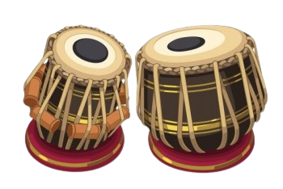

A tabla is a pair of hand drums from the Indian subcontinent. Since the 18th century, it has been the principal
percussion instrument in Hindustani classical music, where it may be played solo, as an accompaniment with other
instruments and vocals, and as a part of larger ensembles. It is frequently played in popular and folk music
performances in India, Bangladesh, Afghanistan, Pakistan, Nepal and Sri Lanka. The tabla is an essential
instrument in the bhakti devotional traditions of Hinduism and Sikhism, such as during bhajan and kirtan singing.
It is one of the main qawwali instruments used by Sufi musicians. The instrument is also featured in dance
performances such as Kathak. Tabla is a rhythmic instrument.
The name tabla likely comes from tabl, the Arabic word for drum. The ultimate origin of the musical instrument is
contested by scholars, though some trace its evolution from indigenous musical instruments of the Indian
subcontinent.
The tabla consists of two small drums of slightly different sizes and shapes. Each drum is made of hollowed-out
wood, clay or metal. The smaller drum (dayan/tabla) is used for creating treble and tonal sounds, while the primary
function of the larger drum (baya/dagga) is for producing bass. They are laced with hoops, thongs and wooden dowels on
its sides. The dowels and hoops are used to tighten the tension of the membranes for tuning the drums.
The playing technique is complex and involves extensive use of the fingers and palms in various configurations to create
a wide variety of different sounds and rhythms, reflected in mnemonic syllables (bol).
|  | |
| Percussion instrument | |
|---|---|
| Classification | Membranophone percussion instrument |
| Hornbostel-Sachs classification | 211.12 |
| Developed | 18th century, North india |
| Playing range | |
| One octave (Variable) | |
| Related instruments | |
| Pakhavaj, mridangam, khol, dholak, nagara, madal, tbilat, jori, bongos | |
Like many historical instruments, the tabla has disputed origins. While the name comes from the Arabic word for ‘drum,’ it is commonly believed that the tabla has ancient Indian origins and was renamed under Islamic rule. The tabla is considered a modern version of the ancient pushkara drums, small hand-held drums found in many temple carvings from the 6th and 7th centuries, and even as early as temple carvings from 500 BCE. The drawings showed drummers sitting before two separate drums and playing with their palms and fingers.
Textual evidence of drums similar to the tabla exist in Natyashastra, a Sanskrit text from 200 BCE, and just a few
hundred years later there was the South Indian text Silappatikaram, which describes many different kinds of rhythm
instruments. Drums and taals (rhythm) were mentioned in Vedas, as well. The tabla's exact origin is unknown and
attributed to many but unquestionably, the modern tabla developed from a combination of ancient Indian drums.
What is recognised as the modern tabla came into use during the 18th century, which can be marked as the beginning of
the main gharanas in tabla. It was during this era that the tabla became the primary rhythm instrument for Hindustani
classical music. Over the years the drums have slowly evolved into the form that is popular today in both classical and
popular music.
Tablas can vary in many ways, even being customised to individual players. Many elements of the drums can be altered to achieve a specific tone, making customization both easy and desirable. For professional players, exact specifications for tabla drums may be derived from their preferred gharana, particularly if certain measurements are well-suited to a specific technique.
The base material of the drums, the lacings, the thickness of the membrane—each affects the resonance and sound of the instrument. Many elements on the tabla must also be regularly maintained and replaced, particularly the drum heads. Learning how to maintain the drums is as essential to learning to play them. All parts of the drum will need to be replaced apart from the bases, which have been known to be passed down through generations.
The tabla has very specific techniques for playing, each derived from one of the six gharanas. There are also techniques specific to improvisation and alap that may differ from gharana techniques. Although not exactly the same, all of these techniques use bols to comprise taals. Bols are the individual strokes on the drums in the oral tradition of mnemonic syllables. Taal is the Indian system of rhythm with many established taals that measure musical time.
There are about 16 bols, including the most popular ta, ghe, dha, ka, na, and tu. The technique for each stroke varies
by school but here is one example of how to execute ta on the dayan: striking the rim of the drum with the index finger
while applying pressure to the edge of the syahi with the fourth finger.
There are many more tabla taals than can be counted. Like ragas for melody, each one has a specific structure that
provides the foundation for classical music, both Hindustani and Carnatic tradition. Some of the most popular tabla
taals are tintal, jhoomra, dhamar, and keherwa. The last one, for example, is comprised of eight beats in a four/four
pattern.
It is rare that classical tradition includes written notation, so players must memorise bols and taals to be able to
play compositions or improvise. While it is possible for some drums to be played instinctually or randomly, the hand
positions that accompany each bol must be practised extensively for the tabla to be played correctly. Beginning students
must be dedicated to tabla playing and tabla lessons.
There are many exceptional tabla players, past and present. Below are some of the most talented and well-known tabla players around the world.
Charmie Weerapperuma 2024 | © All Rights Reserved